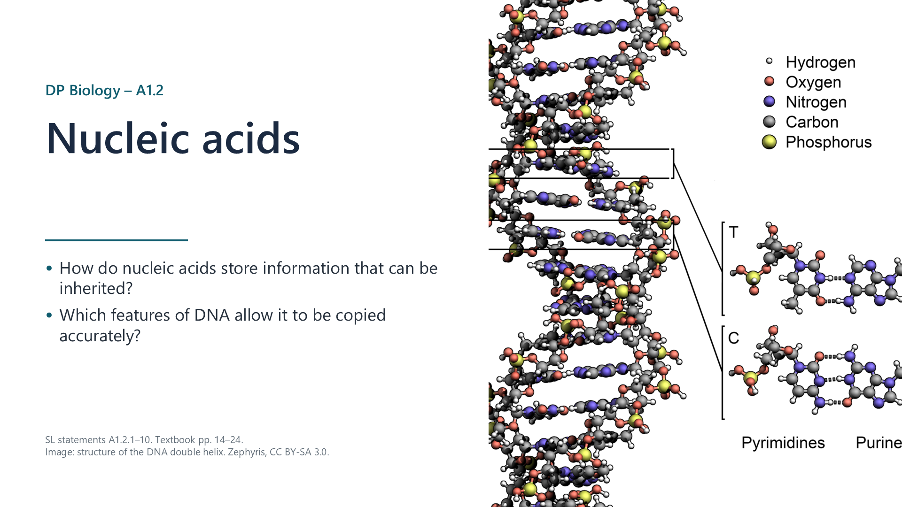
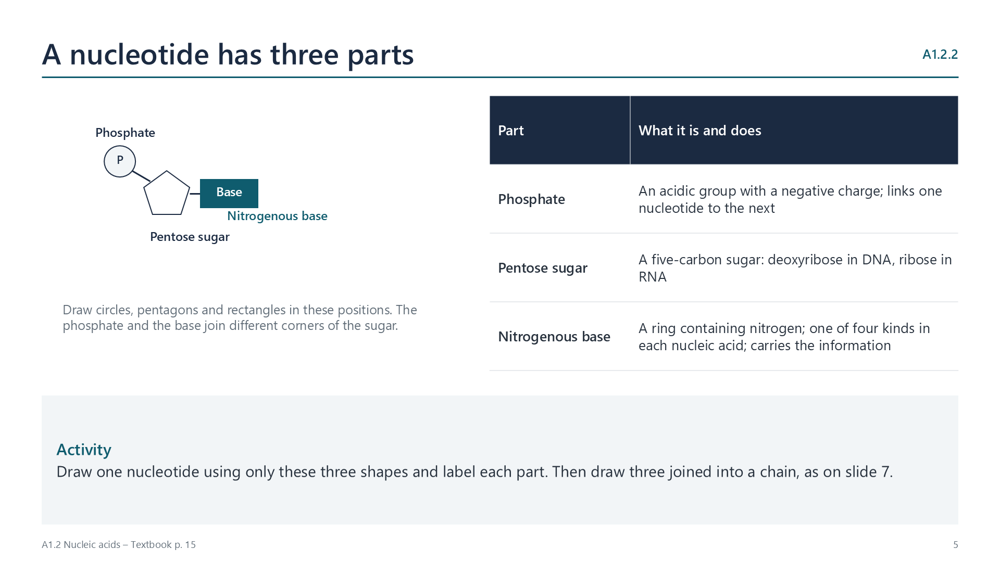
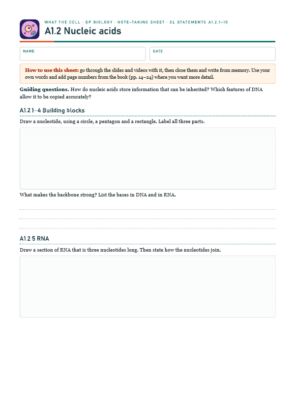
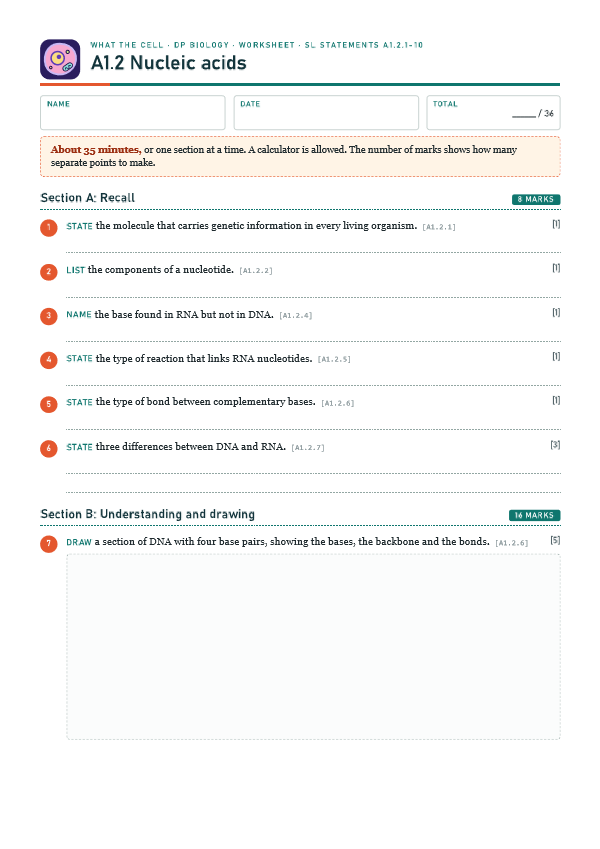

DNA is the genetic material of life
pp. 14–24All living organisms use DNA as their genetic material. Some viruses use RNA, but viruses are not considered to be living.

Written for this site from the class slides. The chapter is on pages 14–24 of the course textbook. Image credits are on slide 29.
All living organisms use DNA as their genetic material. Some viruses use RNA, but viruses are not considered to be living.
A nucleotide has a phosphate, a pentose sugar and a nitrogenous base. In diagrams, use a circle, a pentagon and a rectangle, in these positions.

Each sugar bonds to the phosphate of the next nucleotide. This makes a continuous chain of covalently bonded atoms, so that the backbone is strong. Any base can follow any other.
DNA has adenine, cytosine, guanine and thymine. RNA has uracil in place of thymine. Only the base varies along a strand, so the base sequence carries the information.
RNA nucleotides are monomers that join by condensation, releasing water for each new bond. RNA is a single strand with a sugar-phosphate backbone.
Two antiparallel strands, running in opposite directions, are linked by hydrogen bonds between complementary bases: A with T, and G with C.
Exam tip: draw the two strands antiparallel. You do not need to draw the helix, or to remember the numbers of hydrogen bonds.
| DNA | RNA | |
|---|---|---|
| Strands | Two | One |
| Sugar | Deoxyribose | Ribose |
| Bases | A, C, G, T | A, C, G, U |
Ribose has an -OH group on the carbon where deoxyribose has only -H, so deoxyribose has one oxygen atom fewer.
Pairing depends on hydrogen bonds, which form only between the correct bases. Each strand can therefore act as a template in replication. In expression, DNA is a template for mRNA, and anticodons on tRNA pair with codons on mRNA.
Any length of DNA molecule and any base sequence is possible. With four bases, there are 4 possible sequences for one position, 16 for two and 64 for three, and the number rises very quickly. So DNA stores data with great economy.
Almost all organisms use the same genetic code. The chance of this arising separately many times is extremely small, so the best explanation is universal common ancestry.
Select a video to play it here. Select it again to close it.
Print this guide and complete it as you work through the slides and videos. It asks for your own explanations, so close the notes while you try each section.

The self-check needs JavaScript to run.
A printable worksheet covering all ten statements, from quick recall to drawings, data and a longer answer. It has 36 marks and takes about 35 minutes, or you can do one section at a time.
Your teacher has the mark scheme.

You will need: Strawberries, zip-lock bag, washing-up liquid, table salt, filter or coffee paper, ice-cold ethanol, test tube
Safety: Ethanol is highly flammable, so keep it away from flames. Eye protection. Do not eat anything.
Carry this out with your teacher's supervision and follow your school's lab rules.
Watson and Crick built their double helix model using Rosalind Franklin's X-ray data, which she had not given them directly.
Franklin's contribution was long under-recognised. Consider how credit is assigned, and who may be left out.
Predict first, then check. Each one opens on the Think deeper pages.
Summarised in our own words. Use each code to find the exact wording in your textbook or the IB subject guide.
© 2026 Akash Parthi Bendran. Please ask before using or sharing any resources from this site: see permission to use.